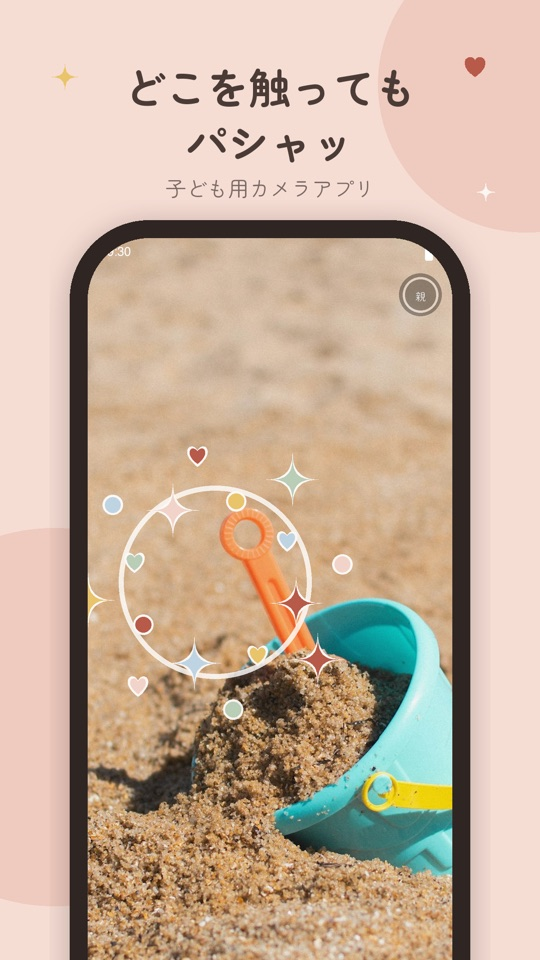
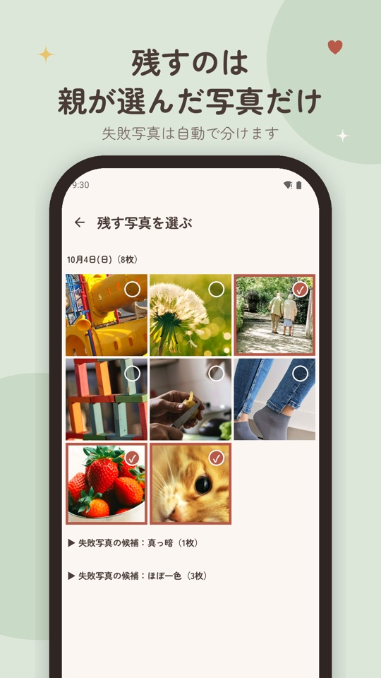
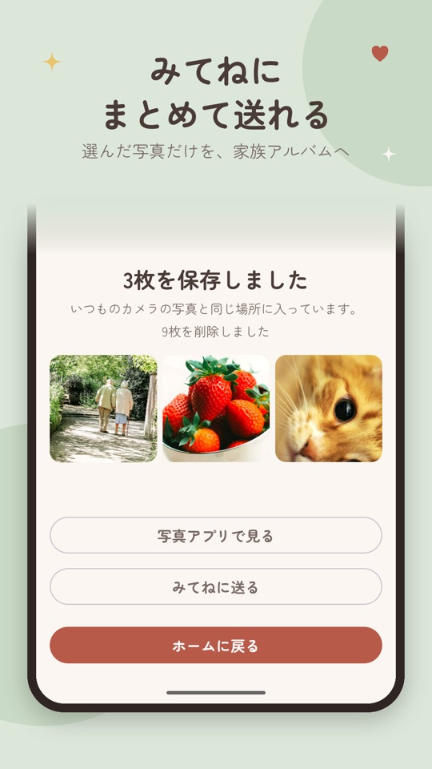
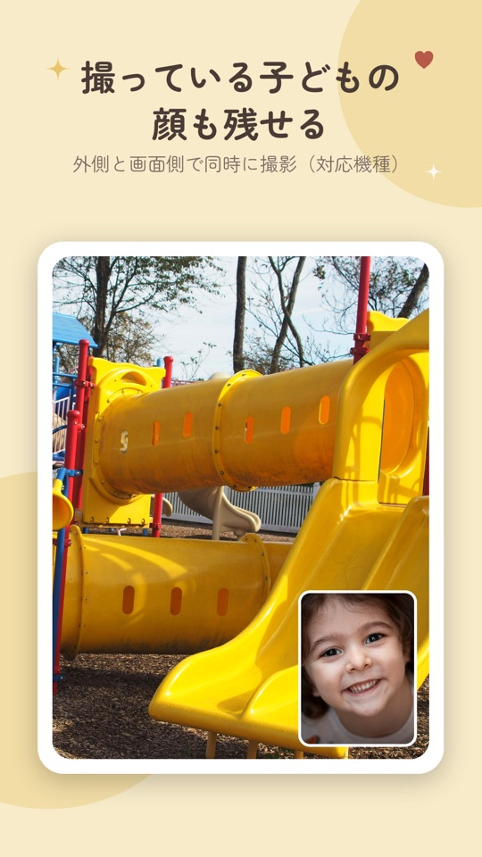
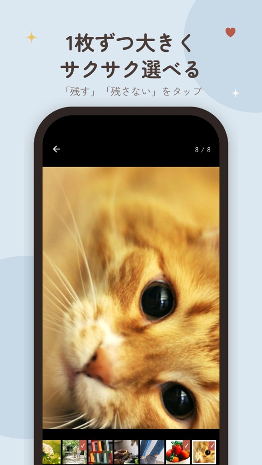

どこを触っても、
パシャッ。
子どもが自由に撮って、残す写真は親があとから選ぶ。
スマホを、安心して渡せる子ども用カメラにするアプリです。
無料ではじめられます。Android 10 以上に対応。
子どもにスマホを渡すと、
あとが大変。
撮りたい気持ちは応援したい。でも、親のスマホを渡すには困りごとがあります。パシャっちは、その困りごとのために作りました。
-
いままで
写真アプリが、真っ暗な写真やブレた写真でいっぱいになる。
パシャっち撮った写真はいったんアプリで預かり、親が選んだ写真だけを写真アプリに残します。
-
いままで
気づくと、ほかのアプリを開いていたり、設定を変えていたりする。
パシャっち撮影中は画面を固定します。戻れるのは、かけ算の答えを知っている親だけ。
-
いままで
シャッターボタンを探せなくて、うまく撮れずに飽きてしまう。
パシャっち画面のどこに触れても、その瞬間に撮れます。撮るたびに星やハートが弾けます。
渡す、選ぶ、残す。
それだけ。
-
1
子どもに渡す
「カメラをはじめる」を押して渡すだけ。あとは子どもが好きなだけ撮ります。

-
2
親が選ぶ
手が空いたときに、残す写真に印を付けます。1枚ずつ大きく見ても、まとめてなぞっても選べます。

-
3
いつもの場所へ残す
選んだ写真だけが、いつものカメラと同じ場所に保存されます。残りはまとめて削除。みてねにもそのまま送れます。

子どもには楽しく、
親にはラクに。
-
撮っている子どもの顔も残せる
外側と画面側のカメラで同時に撮って、1枚に重ねます。子どもが見ていた景色と、そのときの表情がいっしょに残ります。対応している機種では、はじめからオンです。

-
失敗写真は、自動で分けておく
真っ暗な写真や、ほぼ一色の写真は、一覧の最後にまとめます。選ぶのは、ちゃんと写った写真だけ。勝手に消すことはありません。
-
1枚ずつ大きく、サクサク選べる
写真を大きく表示して「残す」「残さない」をタップするだけで次へ進みます。ピンチで拡大すれば、ブレも確かめられます。

-
みてねに、まとめて送れる
保存した写真を、家族アルバム「みてね」にそのまま渡せます。選んだ写真だけが、おじいちゃんおばあちゃんにも届きます。
-
子どもは、ほかのアプリを開けない
撮影中は画面をカメラに固定します。ホームに戻るには、右上の小さなボタンを3秒押して、かけ算の答えを入力します。数字が読めても、答えは分かりません。
-
選び忘れを、そっとお知らせ
選んでいない写真が残っていると、最後に撮ってから1日後と7日後にお知らせします。何度もは鳴らしません。
家族の写真は、
外に出ません。
このアプリにはサーバーがありません。写真を預かるのはスマホの中だけです。
-
通信しません
インターネットにつなぐ機能そのものを持っていません。写真も、使い方の記録も、どこにも送りません。
-
広告がありません
子どもが触る画面に、広告や外のページへのリンクはありません。間違えて押す心配がいりません。
-
位置情報を付けません
撮った場所の情報を、写真に記録しません。みてねや SNS に送っても、自宅や公園の場所は伝わりません。
-
使う許可は、カメラと通知だけ
写真フォルダや連絡先、マイクの許可は求めません。外に出るのは、親が選んで保存したり送ったりした写真だけです。
撮るのも選ぶのも、
ずっと無料。
保存する枚数が多くなったら、1回だけの買い切りで上限をなくせます。月々の支払いはありません。
無料
0円
ずっと無料
- 撮る・選ぶ・削除するは、何枚でも
- 写真アプリへの保存は、毎月20枚まで
- みてねへの受け渡し
- 失敗写真の自動仕分け
保存の上限をなくす
480円（税込）
1回だけの買い切り。追加の支払いなし
- 無料でできることは、すべてそのまま
- 写真アプリへの保存が、何枚でも
- 機種を変えても、同じ Google アカウントなら引き継げます
無料の上限を超えて選んだときは、保存せずにお知らせします。選んだ写真が消えることはありません。
気になるところを、先に。
どんなスマホで使えますか？
Android 10 以上のスマホとタブレットで使えます。iPhone と iPad には対応していません。外側と画面側のカメラで同時に撮る機能は、対応している機種だけで使えます。対応しているかは、アプリをはじめるときの案内で確かめられます。
子どもが勝手にホームに戻ってしまいませんか？
撮影中は画面をカメラに固定します。戻るには、右上の小さなボタンを3秒押し続けて、画面に出たかけ算の答えを入力します。3回続けて間違えると、しばらく入力できなくなります。あわせて、スマホの設定で「アプリの固定を解除するときにロック解除を求める」をオンにしておくと、端末のボタン操作で固定を外されても、親の PIN や指紋で止まります。
撮った写真はどこに保存されますか？
選ぶ前の写真は、アプリの中だけで預かります。親が「残す」と決めた写真だけが、いつものカメラアプリと同じ場所に保存され、Google フォトなどのバックアップにも載ります。選ばなかった写真はまとめて削除します。
アプリを消したり、機種を変えたりしたらどうなりますか？
選ぶ前の写真は、アプリを削除すると消えます。機種変更でも引き継がれません。先に選んで保存してから、削除や機種変更をしてください。保存した写真は、いつものカメラアプリの写真と同じように引き継がれます。
写真が多すぎて、スマホの容量は大丈夫ですか？
1回に撮れる枚数の上限はありませんが、スマホの空き容量が少なくなると撮影を止めて、選ぶ画面に案内します。選んでいない写真が残っていると、1日後と7日後にお知らせするので、ためこまずに済みます。
シャッター音は消せますか？
設定で消せます。お昼寝中の兄弟のそばや、静かな場所でも使えます。
みてねを使っていなくても使えますか？
使えます。みてねが入っていないスマホでは「みてねに送る」ボタンは表示されず、選んだ写真はいつもの写真アプリに保存されます。
さあ、渡してみよう。
子どもが見ている世界を、子どもの目線で。
残す写真は、あなたが選べばいい。